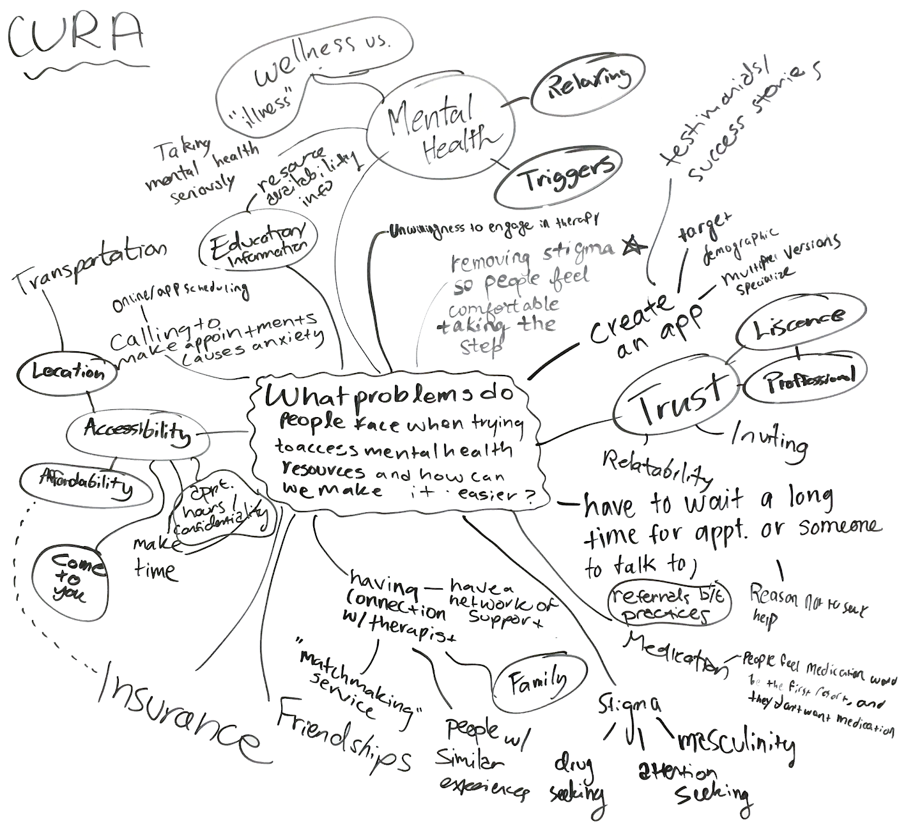
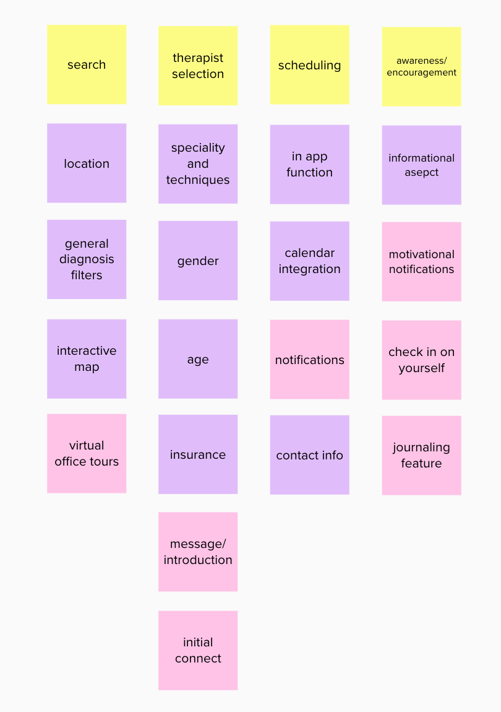
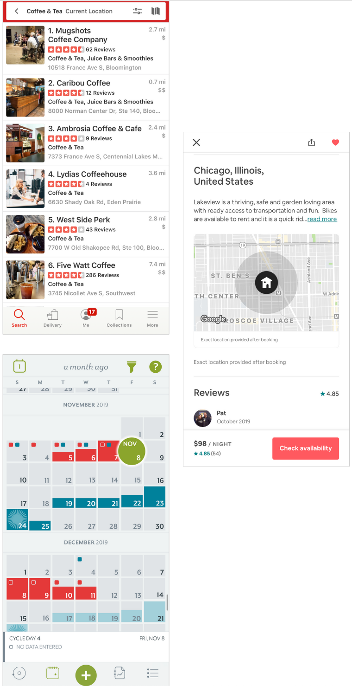
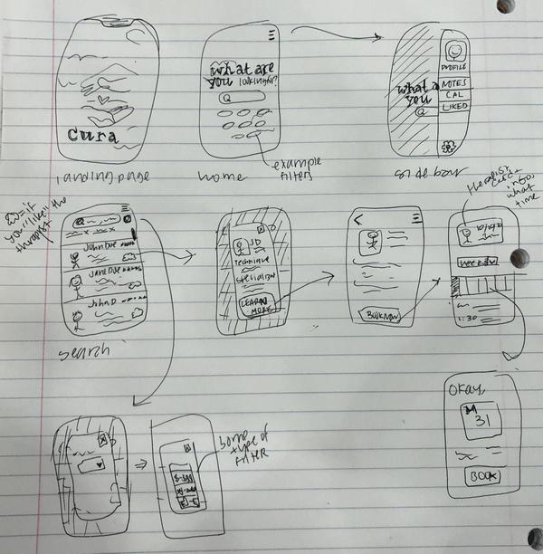
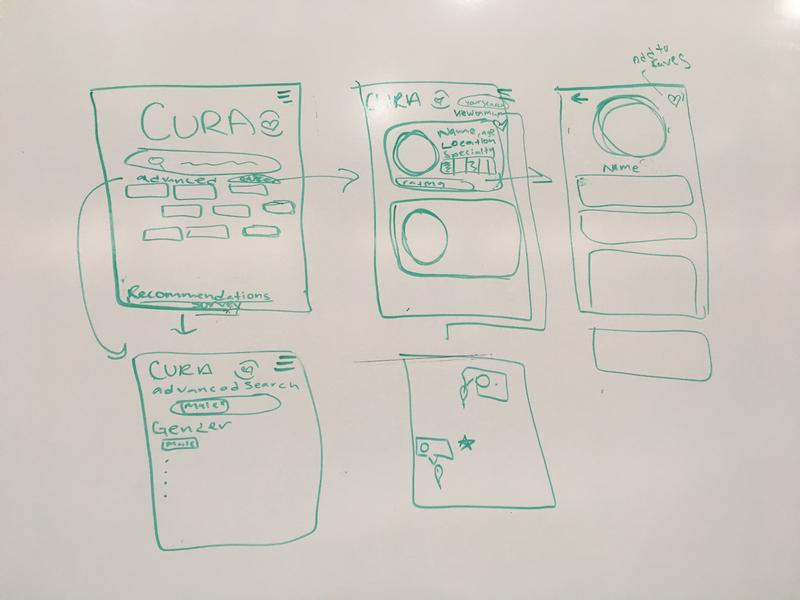
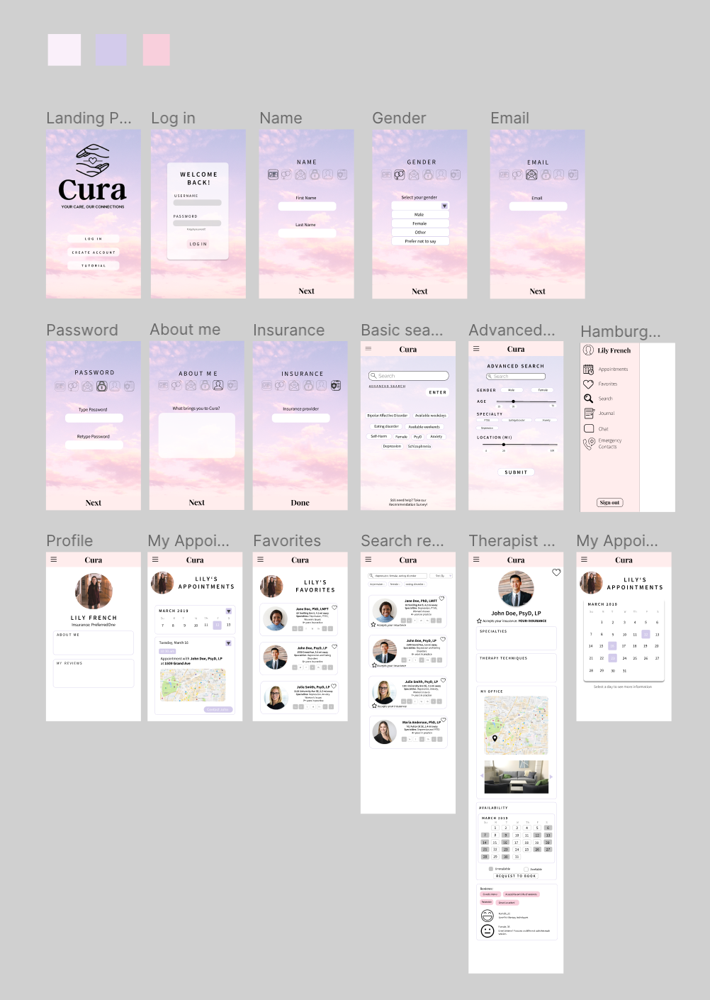
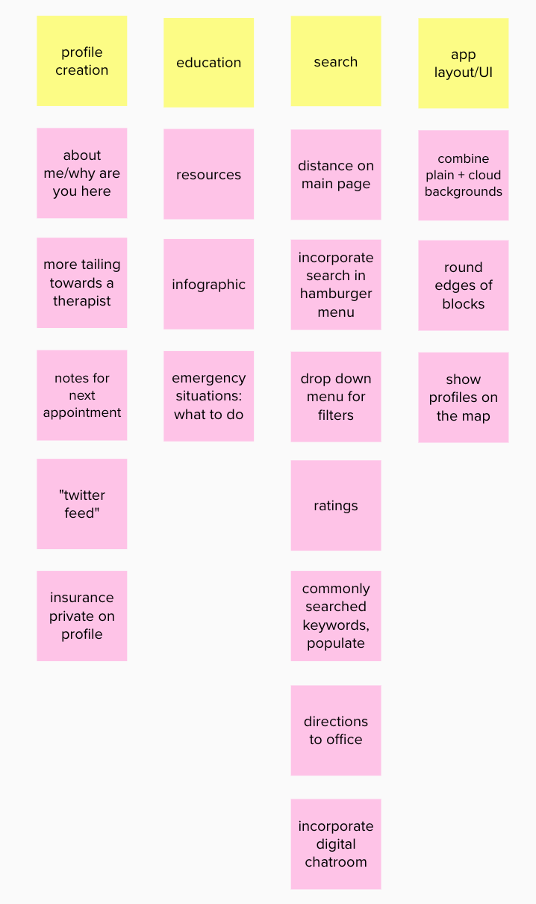
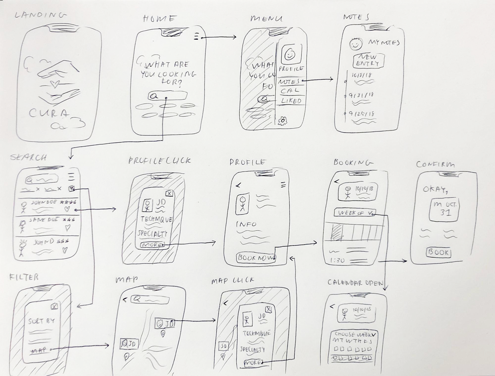

This project was made in collaboration with Lily French, Sean Cheng, Avleen Kaur, and Blia Thor, and spanned the duration of 10 weeks.
As a digital designer for Design U, my school’s non-profit student run design consultancy group, we worked with a local
client, Cura, a St. Paul based start up centered around connecting people with reliable and affordable mental health
care that fits their unique needs.
Through using design thinking, the sprint model, user research, and digital prototyping, we help the Cura team make their idea a reality.
My team completed this project through a series of five two-week sprints, each week focusing on
a different step of the design process. Starting with user research, moving onto problem statement definition,
lo-fi exploration, prototyping and testing, and finally passing off the deliverable to the client.
After our team passed the wireframes off to our client, I have continued revisiting and working on this
project.
Sprint 1: User Research
We started off by creating a mind map to generate a general list of questions to ask our potential users.
The four main topics we wanted to focus on were stigma, accessibility, trust, and education.

From there, we conducted user interviews with our
peers to further understand the importance of accessible mental health resources, and to narrow in on needs
and wants for an app. One quote from a friend I interviewed that really stuck out to me was:
“My mental health affects everything I do and my headspace, finding a proper therapist for my specific needs has
allowed me to see life more clearly.”
Sprint 2: Problem Statement & Design Inspiration
After our user interviews, we came to the conclusion that mental health
resources were pretty hard to come by, and that the process of even finding an
initial therapist was intimidating. Thus, we wanted to center our design around
accessibility, simplicity, and ease of use. Our main focus was summarized up with
the statement
How might we design a mobile application that
easily connects users to therapists that fit their unique needs?
From our interviews, we brainstormed a list of essential elements and features to incorporate
in the app through a card sort activity. Some features included a detailed and filterable search system, a clear rating system, mood/emotion tracker,
and an in app booking feature. We pulled inspiration from existing apps such as Yelp, AirBnb, and Clue.


Sprint 3: Lo-fi Exploration
We started ideating and prototyping, first with individual rough paper prototypes. We then compiled our
ideas together and came up with a basic layout to base our digital wireframes off of.


Sprint 4: Initial Prototype & Testing
We moved our paper prototype onto Figma, and started building out the pages. We then conducted user and client tests, and below are the changes our
users recommended we made. I refined the paper prototype to include the added features.



Throughout the design phase, we checked in with our client throughout, and after multiple feedback loops,
we refined our design before passing off the final deliverable.
Sprint 5: Hi-fi deliverable
After implementing all of the changes from feedback, we passed off the wireframes to our client.
lessons learned & next steps
Our client is currently building a local therapist database on our college campus,
and is looking for developers to bring his idea and our mockups to reality.
This was one of my first user experience projects, and I learned a lot more about designing from start to finish,
and not just jumping straight to the visual design of a project. With my previous experience with graphic
design, I tend to go right to my laptop and start creating. However, this project would not have been as
cohesive or successful without the research, user interviews, and testing we did.
As I grow more as a designer and learn more about user experience, I like to revisit this project and update it. Moving forward,
I have some ideas on how to continue improving on the work we did, including creating and refining the therapist side of the product, and
updating the design language to increase usability.